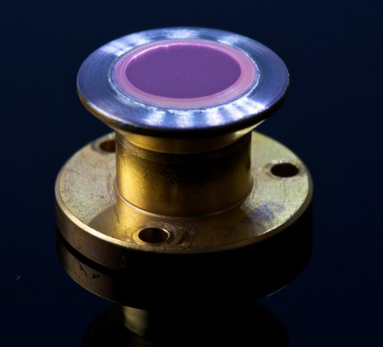
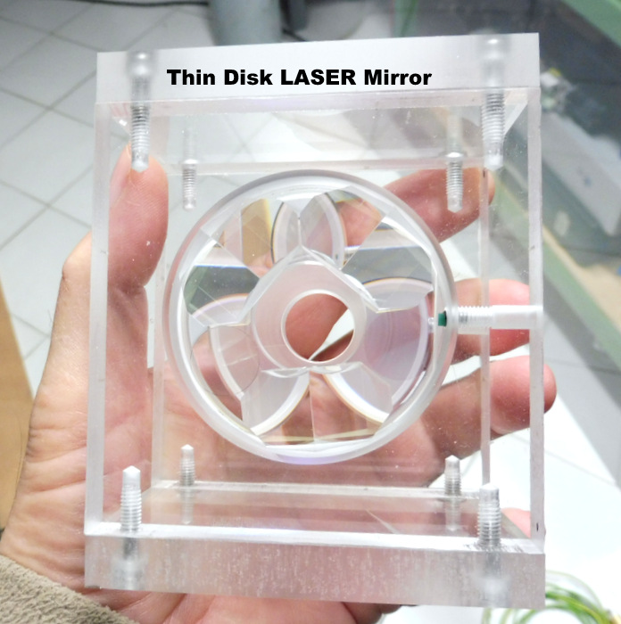
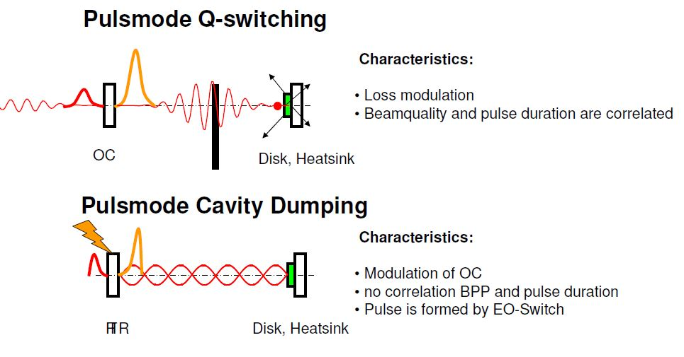
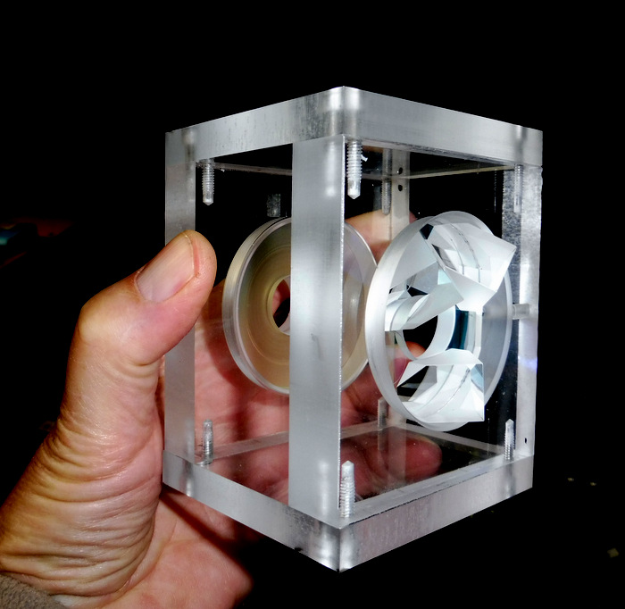
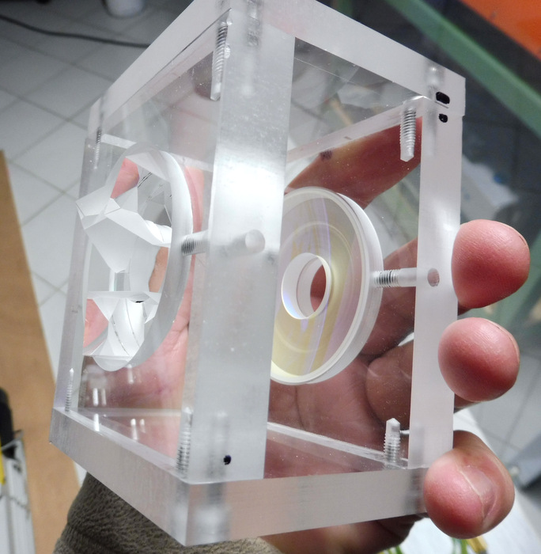
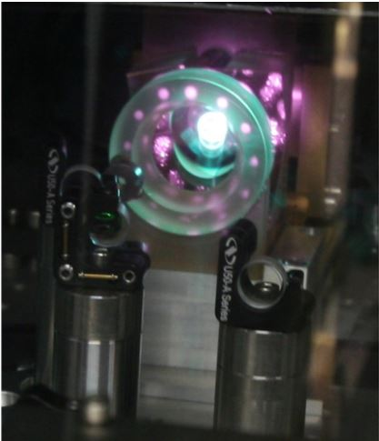
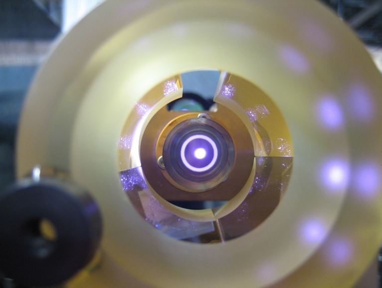
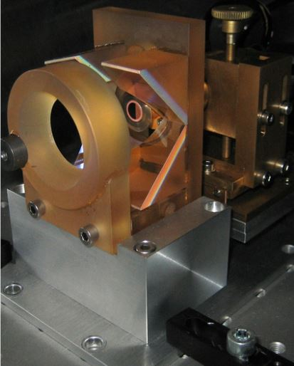

TDL LASER TDL=Thin Disk Laser L'invention du TDL date de 1993 par le Prof. A.Giesen (Appl.Physics B58 1994 p.365) La définition du disque laser est : un laser à milieu solide avec un dissipateur de chaleur pompé optiquement ayant un flux thermique colinéaire à l'axe optique.
Dans une première phase je vais
construire un laser à disque mince aussi souvent appeler "miroir
amplificateur" en plexi-glass de manière à bien visualisé le parcours des faisceaux pompe et du faisceau laser ainsi que les circuits de
refroidissement. Le laser pompe sera remplacé par un laser diode à 530nm (vert) pour la visualisation. Dans la deuxième phase le plexi-glass sera remplacé par de l'acier inoxydable.
Les lasers "Disk" sont les lasers les plus performants de tous les types de lasers connus (solide,liquide et gazeux). Ils peuvent travailler en continu ( 60kW continu) ou en régime pulsé (mode déclenché (Q-switching) ou en modes blockés (mode locking)) avec des durée d'émission de 60 femtosecondes pour les cristaux Yb:CALGO, des puissances moyenne de 2kW et des intensités crête de 2TW avec des amplificateurs TDL ! La densité de puissance d'émission du Yb:YAG est de +600kW.cm-3

Principe de fonctionnement: Ce type de laser se compose d'un monocristal de la forme d'un disque plat et mince permettant de bien dissiper la chaleur. Le disque se compose sur la face avant d'un dépôt multi-diélectrique anti-réflexion (AR), puis du mono-cristal amplificateur ayant une épaisseur de 0.1mm à 2mm suivant l'application désirée. Puis la face arrière est muni d'un revêtement multi-diélectrique présentant une réflexion maximum (HR). Ce disque est collé ou soudé sur un corps en cuivre pour les petites puissances. Pour les grandes puissances (plusieurs kW) le disque est soudé par diffusion sur un disque en diamant type IIa lequel est refroidit par un jet liquide de refroidissement. Dans le laser que je vais construire j'utilise un disque YAG dopé à 7% d'Ytterbium. La source de pompage doit avoir flux en intensité de 80kWcm2sr-1
Le pompage se fait à 941nm ou 968nm et l'émission à 1030nm au moyen d'une diode laser fibrée. Le laser Yb:YAG est un laser à 3 niveaux avec un rendement quantique très élevé donc adapté pour un fonctionnement en continu (cw). Il présente également une durée de fluorescence longue (1ms) ce qui est avantageux pour faire du mode déclenché (Q-switching) et de l'amplification. La largeur du spectre de fluorescence permet d'obtenir des pulses picosecondes voir même de 600 femtosecondes. Donc un certain nombres d'avantages par rapport au Nd:YAG Il faut favorisé le pompage sur la transition 968nm et non pas 940nm cela réduit d'un facteur 2 l'échauffement du disque et aumente le rendement de 10%. Le faible gain dans la cavité résultant de la faible épaisseur du disque (100-200 microns) nécessite un facteur de qualité Q du résonateur très élevé (50-100) donc un miroir de sortie ayant une transmission de 1 à 2% seulement.
Voici un prototype réalisé en verre acrylique pour visualiser le parcours des rayons de pompage. Le laser finalisé sera en acier inoxydable.
Sur la photo à droite j'ai monté sur une flasque en plexiglass un miroir parabolique de diamètre 53mm muni en son centre d'un trou de 21mm de diamètre permettant au rayon laser de sortir de la cavité. Ce miroir parabolique focalise à 45mm et la surface de celui-ci est revêtu d'une couche multi-diélectrique HR @ 941 et 968 nm. En face se trouve un disque plan en quartz de diamètre 50mm sur lequel se trouve collé 3 prismes servant de renvoi de faisceau pompe, d'une fenêtre d'entrée du faisceau pompe traitée AR @ 900nm à 1000nm ainsi que d'un miroir totalement réflecteur HR @ 941 et 968nm.
Le faisceau pompe traverse ainsi 16 fois le disque Yb:YAG.
Le disque Yb:YAG est monté sur un support muni d'une circulation d'eau qui peut-être réglé selon 3 axes X;Y;Z.


La 2eme partie sera de faire fonctionner le disque laser en régime déclenché (Q-switching) puis en régime de verouillage de phases soit par un miroir SESAM ou une cellule de pockel.





Voici à quoi ressemblera le laser en acier inoxydable une fois fini ! Celui sur la photo est de la société DAUSINGER + GIESER GmbH.